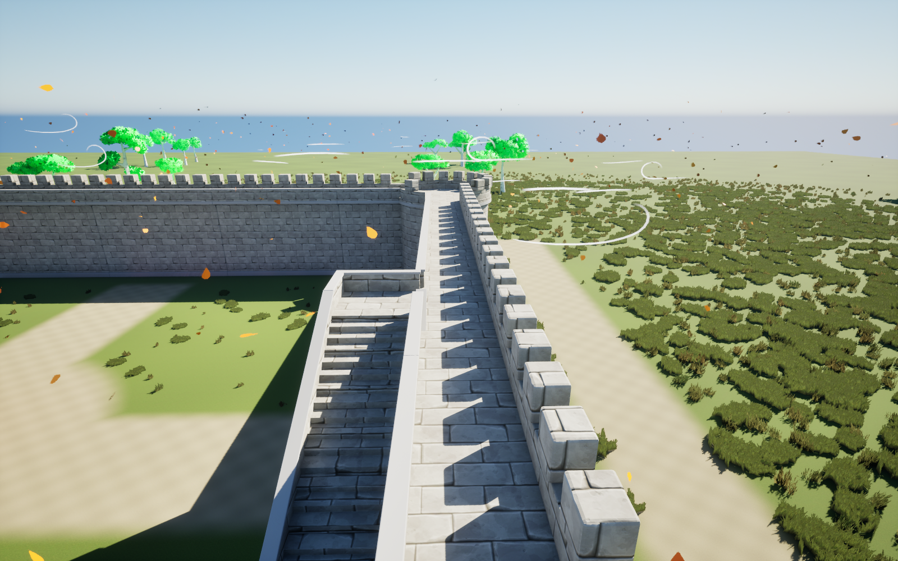

Solo et nexus
Dans cette page
État courant · V27
Version V27 · 23 octobre 2026. Les précisions ci-dessous constituent l’état courant ; les campagnes et versions précédentes restent consultables dans le volet historique.
L’avatar dispose de 2 000 points d’endurance et récupère 45 points par seconde dans les états qui autorisent déjà la récupération. Les coûts d’action restent inchangés. Après trois secondes sans subir de dégâts, il récupère un point de vie par seconde, sans dépasser ses PV maximum. De nouveaux dégâts réinitialisent ce délai ; la pause solo ne le fait pas avancer.
Le menu I est commun au solo et au multijoueur : trois places d’équipe, vingt places en réserve, portraits approuvés, niveaux, XP, PV et KO. Glisser-déposer pour déplacer ou échanger ; clic droit pour rejoindre la première case libre de l’autre espace. Équipe pleine, une nouvelle recrue rejoint la réserve. Une collection pleine refuse le recrutement sans dépenser de mana. La suppression simple ou multiple demande confirmation.
Organisation, captures et validation V27 · Gestion des ombres
Guide détaillé et historique antérieur à V27
Gestion des ombres V23 · solo
I ouvre la collection : trois alliés dans l’équipe et vingt places en réserve, avec portraits, modèle 3D, statistiques, échanges et suppression multiple confirmée. Recrutement supplémentaire en réserve et reprise de la collection vérifiés.
Guide et rendu réel du menu · Corrections épée, ours et caméra. Le menu multijoueur reste à venir. Git dans Unreal est laissé désactivé ; dépôt conservé.
ÉTAT DU PROJET · 16 OCTOBRE 2026
Le mode solo : guide complet
Base, progression, vagues, IA, combat, inventaire, alliés, interface et réglages de maintenance.
Portail d’invocation : fissures et éclats
Le portail solo se fissure puis se disperse en éclats cyan pendant 0,7 seconde. Le mob reprend ses mouvements au même moment qu’avant ; les effets temporaires sont ensuite supprimés. Vérifié sur loup, ours et aigle.
Vignettes fidèles au rendu du jeu
Les portraits du loup, de l’ours et de l’aigle ont été repris après de vrais recrutements dans la cour, avec leurs effets animés et les réglages de la caméra joueur. Les anciennes prises de studio atténuaient les effets et grisaient le pelage. Les nouvelles textures de l’interface reprennent maintenant les captures du jeu ; les matériaux du loup et de l’ours restent conservés.
21 octobre — Aigle ombral et réanimation V19
L’aigle solo reprend les vrais matériaux et effets du loup/ours : corps sombre, contour cyan, nervures, flammes et brume. Nouvelles vignettes loup, ours et aigle avec effets visibles. Hauteur de révélation corrigée pour que la tête se forme progressivement avant la fin du rituel.
Réanimation temporairement garantie pour les créatures réanimables, coûts et limite d’alliés conservés. Captures et vérifications V19.
21 octobre — Interface et compagnons solo V18
Polices harmonisées avec contour sombre, cartes d’alliés et barres de vie redessinées, dégâts plus grands et animés. Noms : Loup ombral, Ours ombral et Aigle ombral. Portraits des vrais modèles, textures adaptées à leur petite taille.
Griffes de l’ours reconstruites avec un plan de flexion cohérent. Aigle ombral recrutable, suivi aérien, piqué/œuf, progression et rappel/invocation ; repos solo de 3 secondes après 20 secondes de vol. Rendu et vérifications V18. Cette étape cible le solo, sans nouvel exécutable distribué.
Mort et retour sur la plaque · 19 octobre 2026
En solo, la mort bloque les déplacements, attaques, esquives, sauts et accroupissements. Le corps reste à son emplacement ; s’il meurt en l’air, il tombe verticalement jusqu’au sol. La caméra orbitale et la pause restent disponibles. Les dégâts et les poussées sont neutralisés pendant toute la séquence.
Après 3 secondes de jeu, le même personnage est replacé couché sur le point de retour de la plaque existante. Il se relève en 2,8 secondes avec appui des mains puis d’un genou. Les commandes, collisions, points de vie et endurance reviennent seulement à la fin réelle de l’animation. Une nouvelle notification de mort ne redémarre pas les délais. La pause suspend aussi la progression de la séquence.
La tenue, les couleurs et les réglages de cheveux/clignement sont conservés. Le composant de réanimation cesse de fonctionner à chaque image une fois le personnage vivant. Le comportement du personnage natif multijoueur reste distinct : ce nouveau relèvement concerne le solo.
71 contrôles fonctionnels couvrent deux morts successives, dont une en l’air, les actions déjà engagées, les tentatives d’attaque et de déplacement pendant la mort, une poussée injectée, la caméra, la pause, les délais, la même plaque, l’apparence et la reprise des commandes. Ce contrôle n’est pas une campagne multijoueur.
Animation active : /Game/Avatar_GardeRobe_V2/Animations/Reanimation/AN_Relever. Source : Art/Avatar_Reanimation_V1/Avatar_Relever.blend, 65 os communs avec AN_Mort, racine fixe, départ raccordé à la pose finale de mort, retour exact à la pose debout. Gestion : UAvatarResurrectionComponent dans le plugin, composant ReanimationAvatar du personnage et BP_BaseControleur.Reapparaitre. La plaque BP_PlaqueRespawn.PointRetour reste la référence.

Le mode solo aujourd’hui
Le solo est le mode de défense de base. Le joueur évolue sur /Game/Level/L_Base_Nexus, combat, recrute des alliés et protège son nexus contre des vagues de loups de niveau croissant. Le lancement manuel des vagues sert actuellement aux essais ; le réglage de lancement automatique toutes les dix minutes existe mais reste désactivé.
La première map, L_MondePrincipal, reste une ressource de référence pour l’environnement et les anciens aperçus. La présence d’une vidéo ou d’un fichier HTML montrant cette map ne signifie pas qu’elle est encore la map de gameplay principale.
La boucle actuelle est : choisir Solo → se déplacer et s’équiper → lancer une vague → défendre la base → éliminer ou recruter les ennemis disponibles → lancer la suivante. La destruction du nexus arrête le système de vagues.
Organisation de la base et de la map
La base associe un nexus, des remparts, une porte, des tours arrondies, des chemins supérieurs et des escaliers. L’environnement comprend herbe, arbres et effets de feuilles/vent. Les remparts ont reçu le matériau de pierre stylisée et des corrections de géométrie : régularité des créneaux, dégagement des sols supérieurs et muret intérieur. Les ressources et comparaisons de ces travaux sont conservées dans SourceArt/Remparts_Pierre_V1 et Remparts_Pierre_V2.
| Élément | Classe / rôle | Vie maximale configurée |
|---|---|---|
| Nexus | BP_Nexus : objectif à défendre | 3 000 |
| Rempart | BP_Rempart : obstacle destructible | 1 000 |
| Porte | BP_Porte : passage ouvrable/destructible | 1 200 |
| Contrôleur de base | BP_BaseControleur : gestion de base et réapparition | Sans objet |
Ces valeurs sont les maxima relevés dans le projet. Certaines propriétés Vie sérialisées dans la map valent encore 1 000 avant le démarrage ; l’initialisation exécutée en jeu peut les remplacer. Pour modifier une vie initiale, contrôler à la fois VieMax, la valeur placée dans la map et le BeginPlay du Blueprint.
Les collisions des escaliers et la continuité du chemin de ronde restent des points à rejouer après une modification de rempart. Une surface visuellement plate peut avoir une collision différente. Le NavMesh doit aussi être reconstruit ou actualisé si les obstacles changent, car les vagues s’appuient sur l’accessibilité réelle des cibles.
Sources du projet : documentation_assets.json.
Commandes utiles
| Commande | Effet en solo |
|---|---|
| Z / Q / S / D | Déplacement sur clavier AZERTY |
| Souris | Orientation de la caméra |
| Maj | Bascule marche / course ; consomme l’endurance pendant la course effective |
| Espace | Saut, avec variante en course |
| Ctrl gauche | Accroupissement |
| E | Esquive adaptée à l’équipement |
| Clic gauche avec épée | Un geste ou enchaînement de quatre gestes selon la durée du maintien |
| Clic droit avec épée | Attaque secondaire avec onde de choc finale |
| Clic gauche avec épée en l’air | Attaque plongeante et récupération au sol |
| Clic droit avec arc | Visée uniquement |
| Clic gauche maintenu en visée / relâché | Charge / tir de la flèche |
| R | Recrutement lorsqu’un candidat valide est ciblé ; sinon sélection des poings |
| & / é / " / ’ / ( | Sélection des cinq emplacements d’objets ; le poing est séparé |
| A | Action de lâcher / lancer l’objet sélectionné |
| Molette pendant la préparation du lancer | Ajuste la distance de lancer de l’objet |
| T / Y | Rappeler / déployer les alliés |
| Verr. Maj maintenu 2 s | Déclenche la vague suivante lorsque les conditions sont réunies |
| Échap | Menu commun : reprise, personnalisation, options et retour au choix du mode |
« Verr. Maj » désigne la touche cadenas, pas Maj/Shift qui sert à courir. Les raccourcis de l’inventaire viennent du contexte IMC_InventoryBar. Les noms techniques et les touches exactes extraits des assets figurent dans les annexes.
Vie, mana et endurance
Le personnage solo gère ses ressources dans BP_AvatarCharacter. Elles sont utilisées par le combat, la course, les esquives et le recrutement.
| Ressource ou coût | Valeur configurée |
|---|---|
| Vie maximale | 300 |
| Mana maximal | 100 |
| Régénération de mana | 5 par minute |
| Gain de mana par élimination | 5 |
| Gain par énergie | 25 |
| Endurance maximale | 200 |
| Course | 12,5 d’endurance consommée par seconde |
| Récupération d’endurance | 15 par seconde |
| Minimum pour engager la course | 10 |
| Saut | 20 |
| Attaque secondaire épée | 20 |
| Esquive | 20 |
| Coup de poing | 20 |
| Tentative de recrutement | 25 de mana |
Une valeur présente dans le Blueprint indique le réglage du système ; elle ne doit pas être appliquée une seconde fois dans un composant ajouté ultérieurement. Les coûts de l’action et leur validation doivent rester proches du déclenchement effectif pour éviter de payer une action annulée ou de lancer une action sans la ressource nécessaire.
La mort, les 3 s d’attente puis le relèvement sur la plaque sont décrits dans la section dédiée. Les commandes reviennent après le relèvement, pas dès la téléportation. Les règles réseau de reconnexion après crash restent indépendantes.
Sources du projet : documentation_audit.json.
Inventaire, objets et flèches
L’inventaire visible comporte six cases : le poing et cinq emplacements d’objets. Dans le Blueprint solo, InventoryItems contient les cinq objets ; la case du poing a un traitement distinct. L’épée et l’arc font partie de l’équipement initial. Le composant d’arc ajoute le stock initial de 100 flèches.
Les flèches ont une définition d’objet, une icône d’inventaire et un objet récupérable dans le monde. Une pile contient au maximum 100 flèches : en ramasser une 101e commence une autre pile s’il reste une case libre. Une pile pleine ne doit pas absorber silencieusement un objet supplémentaire.
Les flèches plantées dans le décor sont récupérables à proximité, après un court délai de 0,6 s et avec une ligne de vue. Les flèches ayant touché une créature ne le sont pas. Le rayon de récupération configuré est de 100 cm. Une flèche plantée reste 60 s par défaut ; son enfoncement visuel est de 12 cm.
Le lancer d’objet utilise une distance entre 70 et 500 cm, initialement 250 cm, ajustée par pas de 50 cm. Le réglage de charge est de 1,2 s et le délai avant récupération d’un objet lâché de 2 s. Ces paramètres concernent les objets de l’inventaire, pas la balistique des flèches.
| Ressource | Chemin |
|---|---|
| Définition de l’arc | /Game/Avatar_GardeRobe_V2/Armes/Arc/Items/DA_Item_Arc |
| Définition des flèches | /Game/Avatar_GardeRobe_V2/Armes/Arc/Items/DA_Item_Fleches |
| Objet arc au sol | /Game/Avatar_GardeRobe_V2/Armes/Arc/Items/BP_Item_Arc |
| Objet flèches au sol | /Game/Avatar_GardeRobe_V2/Armes/Arc/Items/BP_Item_Fleches |
| Modèles utilisés | Armes/Arc/Modeles/SM_Arc_Noir et SM_Fleche |
| Icônes et réticule | Armes/Arc/Interface |
Sources du projet : AvatarBowComponent.cpp, AvatarArrowSurface.cpp.
Combat et transitions
L’épée utilise le combo à quatre mouvements décrit dans le guide Avatar. Le relâchement du clic arrête l’enchaînement au point de sortie du geste engagé ; ce n’est pas une interruption immédiate de toute la pose. Le maintien prolonge le combo et sa boucle. Le bas du corps s’adapte à la marche tandis que le haut suit le geste.
Les dégâts de base de l’épée sont configurés à 20. Le système doit distinguer la fenêtre de frappe, la cible déjà touchée et la traînée visuelle : une traînée prolongée ne doit pas réappliquer des dégâts à chaque image. Le clic droit et le plongeon possèdent leurs propres événements d’impact et leur récupération. Pendant le relèvement au sol, les déplacements sont temporairement bloqués.
Le poing possède deux montages, AM_Combo_Poings et AM_Poings_Continu. Le dégât configuré est de 8, avec une portée de 165 cm et un rayon de contact de 55 cm. La visée du poing possède ses réglages dédiés ; elle ne doit pas déclencher la charge de l’arc.
Pour l’arc, le clic droit prépare la visée. Le clic gauche charge et son relâchement tire ; la puissance fait varier vitesse et dégâts. La flèche subit la gravité, peut manquer une cible et vient se fixer sur une surface. Le guide Avatar détaille les vitesses, temps, poses et effets.
Les vêtements partagent le même squelette mais pas les mêmes poids de déformation. Une validation de combat doit donc couvrir les quatre tenues et les extrêmes de pose, en particulier le col de la veste, le dos de la tunique et l’entrejambe.
Lancement et progression des vagues
Le directeur placé dans la map est BP_DirecteurVagues_C_0, fondé sur AAvatarWaveDirector. Ses réglages de map correspondent actuellement aux valeurs ci-dessous.
| Réglage | Valeur actuelle |
|---|---|
| Ennemis par vague | 6 |
| Augmentation des statistiques par niveau | 10 % composés |
| Lancement automatique | Désactivé |
| Intervalle automatique prévu | 600 s |
| Maintien manuel | Verr. Maj pendant 2 s |
| Distance de génération nominale | 3 900 cm du nexus |
La progression utilise 1,1^(niveau − 1). Le niveau 1 vaut donc 100 % des statistiques de base, le niveau 2 110 %, le niveau 3 121 %. Cette multiplication concerne la vie maximale et les dégâts de griffe/morsure. Elle n’augmente pas automatiquement la vitesse ni le nombre d’ennemis.
| Niveau | Multiplicateur | Exemple sur 100 PV de base |
|---|---|---|
| 1 | 1.0000 | 100.00 |
| 2 | 1.1000 | 110.00 |
| 3 | 1.2100 | 121.00 |
| 5 | 1.4641 | 146.41 |
| 10 | 2.3579 | 235.79 |
Le lancement est accepté seulement en solo, sans vague active, avec joueur et nexus vivants et sans menu bloquant. Pendant le maintien, le panneau en haut à gauche se remplit. Relâcher la touche, ouvrir un menu ou perdre les conditions annule la préparation. La vague suivante attend que le nombre d’ennemis encore vivants atteigne zéro ; un acteur déjà supprimé ne doit pas bloquer cette fin.
La direction d’arrivée change de 90° d’une vague à l’autre. Les positions sont projetées sur le NavMesh, à distance suffisante du nexus, avec espacement entre les ennemis. La génération possède un nombre borné d’essais ; si la vague ne peut pas être créée correctement, elle est annulée et les apparitions partielles sont retirées pour éviter une vague bloquée.
Sources du projet : AvatarWaves.cpp, AvatarWaves.h.
IA des vagues : choix des cibles
Les six ennemis n’ont pas tous le même rôle. Un ennemi sur trois est un traqueur, soit deux par vague de six. Les autres sont des assaillants centrés sur l’accès au nexus. Le choix privilégie une cible atteignable : voir un nexus de l’autre côté d’un mur ne suffit pas pour l’attaquer.
| Priorité | Condition et comportement |
|---|---|
| 1. Riposte temporaire | Un ennemi blessé par le joueur à moins de 950 cm peut riposter pendant 4 s si un chemin est disponible. |
| 2. Traque du joueur | Un traqueur privilégie le joueur vivant et atteignable à moins de 5 500 cm. |
| 3. Nexus accessible | Si le nexus peut être atteint, l’ennemi l’attaque. |
| 4. Brèche commune | Sinon, choix d’un rempart accessible afin d’ouvrir une entrée. |
Le score de rempart associe vie + distance × 0,025. Le plus faible score est préféré : un mur plus abîmé attire davantage les attaques, sans ignorer complètement la distance. La cible déjà choisie bénéficie d’un facteur 0,85 qui limite les changements permanents de mur. La cible commune est réévaluée environ toutes les 3 s. Les portes ouvertes et les éléments détruits sont exclus.
Les décisions individuelles sont espacées et légèrement décalées entre ennemis, plutôt que recalculées à chaque image. Le déplacement utilise la navigation et l’évitement local. L’attaque attend sa fenêtre d’impact puis vérifie à nouveau distance et obstacle avant d’appliquer les dégâts ; elle ne frappe pas automatiquement au lancement de l’animation.
Quand le nexus est détruit, le directeur passe en défaite et les actions de vague s’arrêtent. Ces ennemis sont distincts des loups sauvages ordinaires et des loups réseau : leurs classes et leurs règles de décision ne doivent pas être interchangées sans adaptation.
Sources du projet : AvatarWaves.cpp.
Vie des remparts et informations de défense
Une barre de rempart apparaît pendant les 10 secondes suivant une perte de vie. Elle apparaît également lorsque la caméra vise l’élément et que le personnage est assez proche : le seuil est de 300 cm, soit 3 m. Cette distance se rapporte au contact avec la structure, afin de mieux correspondre à un grand mur qu’une distance au seul pivot.
Le panneau affiche la valeur de vie par rapport au maximum et son remplissage. Il doit rester lié au rempart concerné, et ne pas devenir une barre permanente sur tous les murs. L’affichage possède également une limite de distance de présentation pour les éléments trop éloignés.
Le HUD de défense montre les informations de vague et la vie du nexus. Le panneau de vague remplit aussi la fonction de confirmation du maintien de Verr. Maj. Maj/Shift reste réservé à la course.
Sources du projet : AvatarWaves.cpp.
Recrutement, pacte d’ombre et alliés
Une créature éligible après sa défaite peut afficher le panneau de pacte d’ombre. Le recrutement possède une probabilité de 50 %, coûte 25 de mana et est limité par la portée de 450 cm. Trois emplacements d’alliés sont prévus. La réanimation possède une durée configurée de 1,8 s.
La touche R doit viser un candidat valide et disponible. Un panneau rouge d’échec est un retour visuel : il ne doit plus capter la sélection ou masquer l’interaction avec un candidat valide situé derrière. La même distinction est nécessaire entre le choix au clavier et la zone cliquable ; le panneau qui semble au premier plan n’est pas forcément le bon candidat si le code choisit encore un acteur échoué.
Les commandes d’alliés du solo sont T pour rappeler et Y pour déployer. Les éléments d’interface associés sont placés à droite. Le recrutement, la présence d’une créature dans la liste et son état déployé sont des états distincts : rappeler un allié ne doit pas ouvrir une nouvelle tentative de recrutement.
Sources du projet : documentation_audit.json.
Menus, personnalisation et données sauvegardées
Le menu initial présente Solo et Multijoueur. Le menu Échap permet de reprendre, personnaliser l’avatar, modifier la qualité graphique, choisir plein écran/fenêtre, revenir au choix du mode ou quitter. Le retour au menu principal sert aussi en solo : il évite de devoir fermer le jeu pour choisir l’autre mode.
Le profil d’apparence est enregistré localement dans Saved/SaveGames/FallenNecroma_Appearance_V2.sav. Il contient la tenue et les réglages d’apparence. Il ne constitue pas une sauvegarde de toute la partie solo.
La nouvelle sauvegarde de reprise après crash concerne exclusivement les maps multijoueurs autorisées. Elle ne sauvegarde pas le niveau de vague du solo ni son état complet de base. Il ne faut donc pas annoncer une reprise de campagne solo grâce à cette fonctionnalité réseau.
Sources du projet : AvatarSharedPauseMenu.cpp, AvatarAppearanceComponent.cpp, AvatarMultiplayerSave.cpp.
Modifier le solo : où intervenir
| Besoin | Point de modification | Contrôle indispensable |
|---|---|---|
| Nombre d’ennemis, difficulté, fréquence | Instance BP_DirecteurVagues puis AAvatarWaveDirector | Tester vague 1 puis vague 2 et annulation d’un lancement |
| Stratégie de siège | UAvatarWaveEnemyComponent et sélection de rempart | Tester base fermée, porte ouverte et mur détruit |
| Vie des structures | Blueprints BP_Nexus / BP_Rempart / BP_Porte et instances | Vérifier initialisation à BeginPlay et maximum affiché |
| Vie, endurance, inventaire, combat solo | BP_AvatarCharacter | Vérifier coûts, sortie d’attaque et mort |
| Arc, flèches, récupération | UAvatarBowComponent / AAvatarArrowProjectile | Tester plein inventaire, pile 100, décor et créature |
| Tenue et posture | Meshes, ABP_Avatar_V2_Base, montages et AppearanceComponent | Tester quatre tenues et positions extrêmes |
| Menu commun | UAvatarSharedPauseMenu | Vérifier reprise du contrôle et retour au choix du mode |
Les dossiers d’aperçus dans SourceArt documentent les étapes visuelles. Les modifications réellement utilisées doivent être enregistrées dans Content ou dans le plugin. Éviter de supprimer une variante simplement parce qu’elle est ancienne : contrôler ses références dans Unreal avant de la ranger.
Recette de vérification du mode solo
- Lancer depuis le choix du mode, sélectionner Solo et vérifier le contrôle du personnage après fermeture du menu.
- Marcher, courir, sauter en course, s’accroupir et utiliser E avec poings, épée et arc.
- Relâcher le clic gauche pendant chacun des quatre gestes d’épée, puis maintenir plusieurs boucles en restant immobile et en marchant.
- Tester onde de choc et plongeon : déplacement autorisé pendant la partie mobile, bloqué pendant le relèvement, puis rendu au joueur.
- Avec l’arc, viser sans charger, charger/tirer, annuler et rouvrir le menu. Vérifier caméra, jauge et flèche.
- Ramasser une flèche au sol avec une pile à 99 puis à 100 ; vérifier la création d’une seconde pile et l’absence de ramassage sur une créature.
- Endommager un mur, observer sa barre 10 s, puis la retrouver en le visant à moins de 3 m.
- Lancer deux vagues successives avec Verr. Maj. Contrôler le niveau, les six apparitions, la fin de vague et l’accès au nexus.
- Tester un recrutement réussi, un échec et deux panneaux superposés ; rappeler/déployer les alliés.
- Mourir, réapparaître, personnaliser le personnage, puis revenir au menu de sélection du mode.
Cette liste est une recette de maintenance. Elle ne signifie pas que chaque scénario solo a été rejoué lors de la dernière session dédiée à la sauvegarde réseau. Les essais réellement exécutés et leurs rapports sont listés dans les annexes.